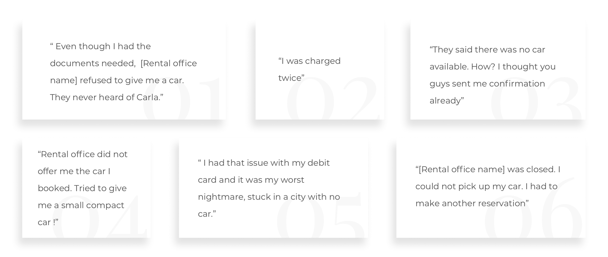
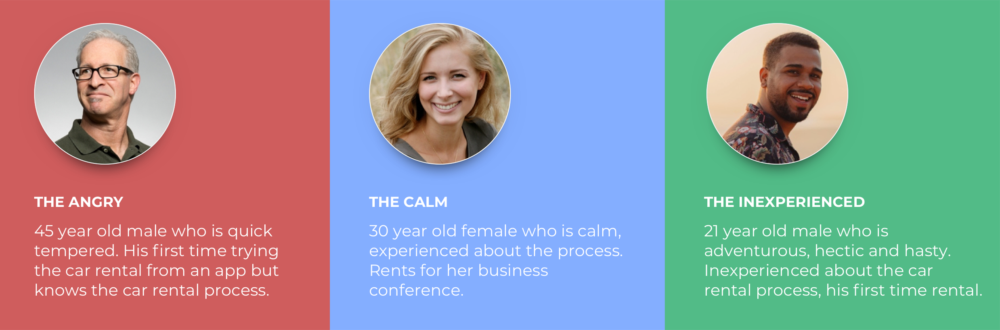

Users
I was dealing with a really dissatisfied and unhappy customer group who lost their way to commute all of a sudden. I needed to make the flow with minimum friction as possible, since their bounce back rate has the
potential of being much higher than every step of the standard processes.
Interviews & analysis on existing issues
To emphasize the customer I created a questionnaire for CX, interviewed them face to face and analyze the user feedback together.

Personas
To emphasize better, I have created personas with the help of inital data.

Forming the feature
After the understand phase, we decided to create a feature that enables us to
enlighten and offer solution to the problem at the counter right when it occurs.
- CX were falling short on immediate help, the customer needed to contact them from the support feature. Many of the users were not contacting even if they were not able to pick up to car.
- We did not generate data automatically about the issues faced on the counter. We were not keeping track of them manually.
- We wanted to collect sufficiant proof about the user not being able to pick up the car.
Therefore we created a form that promts to users a little time after their pickup time, asking them if they were able to pick up the car.
Form included many options, that I collected from the interviews and existing data.
It also included PDF and picture upload sections to allow users to generate additional proof.
41
Customers got help
only in 2 weeks
Many
Dissatisfactions
prevented